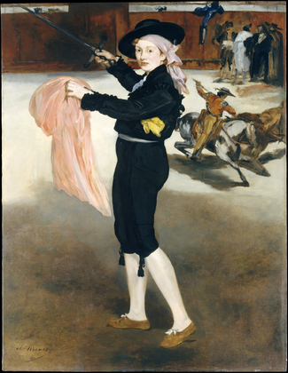

Édouard Manet
Peintures de la période hispanisante
Lola de Valence 1862 (123 x 92 cm) Musée d'Orsay.

Mlle V. en costume d'espada, 1862 (165,1 × 127,6 cm) Metropolitan Museum of Art (New York)
Le Chanteur espagnol 1860 (147,3 x 114,3 cm) Metropolitan Museum of Art
L'Enfant à l'épée, 1861 (131 × 93,3 cm) Metropolitan Museum of Art (New York)
La Corrida 48 x 108 cm, Frick Collection, New York.
L'Homme mort 1864-1865 (75,9 x 153,3 cm) National Gallery of Art, Washington D.C..
Combat de taureau 1865-1865 (90 x 110 cm) Musée d'Orsay, Paris.
Corrida : la mort du taureau, 1865 (48 × 60,4 cm) The Art Institute (Chicago)